OpenPGPDocumentationOrcaPrevious page: OpenPGPIndex page: DocumentationNext page: OrcaSoftware Recommendations
This wiki page outlines software recommendations by Kicksecure for various tasks, such as encryption, email, IRC, media player, image viewer, screenshot creator, calculator, office suite, and more. It includes a list of pre-installed applications on Kicksecure, recommended software for different user activities, installation instructions, and security advice.
Warning
 It is estimated that within 10 to 15 years, Quantum Computers will break
today's common asymmetric public-key cryptography algorithms used for
web encryption (https), e-mail encryption (GnuPG...), SSH and other
purposes. See Post-Quantum
Cryptography (PQCrypto).
It is estimated that within 10 to 15 years, Quantum Computers will break
today's common asymmetric public-key cryptography algorithms used for
web encryption (https), e-mail encryption (GnuPG...), SSH and other
purposes. See Post-Quantum
Cryptography (PQCrypto).
Accessibility
On-Screen Keyboard (wvkbd)
Kicksecure 18 and above. (Wayland based.) Pre-installed by default.
Figure: wvkbd software in Kicksecure
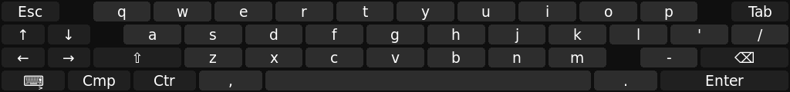
Audio, Image and Video
Audio Recorder and Editor
Audacity homepage (Debian package).
To install it: Start menu -> System Tools ->
QTerminal
Install package(s) audacity following these
instructions:
1 Platform specific notice.
- Kicksecure: No special notice.
- Kicksecure-Qubes: In Template.
2 Update the package lists and upgrade the system.
sudo apt update && sudo apt full-upgrade
3
Install the audacity package(s).
Using apt command line --no-install-recommends option is in
most cases optional.
sudo apt install --no-install-recommends audacity
4 Platform specific notice.
- Kicksecure: No special notice.
- Kicksecure-Qubes: Shut down Template and restart App Qubes based on it as per Qubes Template Modification.
5 Done.
The procedure of installing package(s) audacity is
complete.
Figure: Audacity Software in Kicksecure
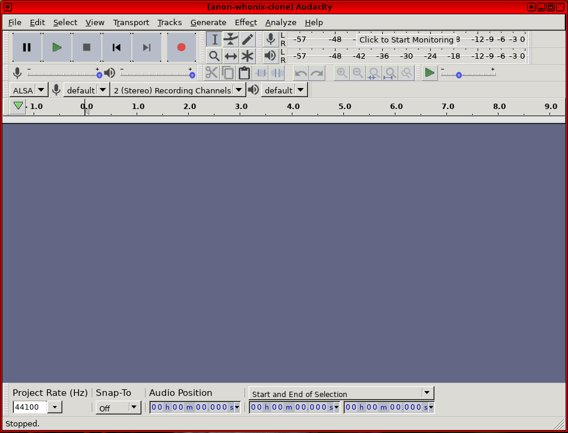
Image and PDF Viewer
Loupe
Installed in Kicksecure 18 by default. Image rendering is handled by Glycin, which is largely implemented in Rust and does image rendering in a sandbox.
Start menu -> Graphics ->
Image Viewer
Figure: Loupe Software in Kicksecure
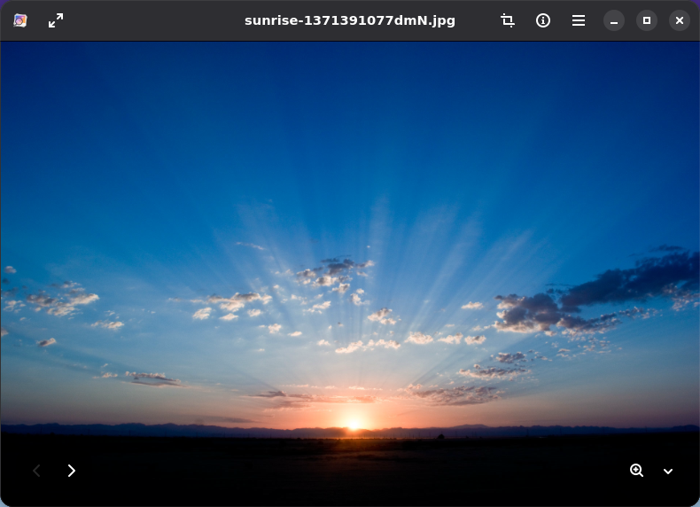
Web browser PDF rendering
 Standard desktop PDF viewers, such as xpdf, qpdfview, Okular, etc. are
not recommended. PDF rendering is complex and prone to security
vulnerabilities similar to web page rendering. Desktop PDF viewers
generally do this rendering without sandboxing. Web browsers are
recommended for viewing PDFs, as the PDF rendering is sandboxed similar
to web page rendering.
Standard desktop PDF viewers, such as xpdf, qpdfview, Okular, etc. are
not recommended. PDF rendering is complex and prone to security
vulnerabilities similar to web page rendering. Desktop PDF viewers
generally do this rendering without sandboxing. Web browsers are
recommended for viewing PDFs, as the PDF rendering is sandboxed similar
to web page rendering.
No particular recommendations. Any major web browser with an embedded PDF renderer (such as Mozilla's PDF.js or Google's PDFium) should work. Several suitable browsers can be installed using Browser-choice.
Figure: PDF rendering in Firefox ESR in Kicksecure
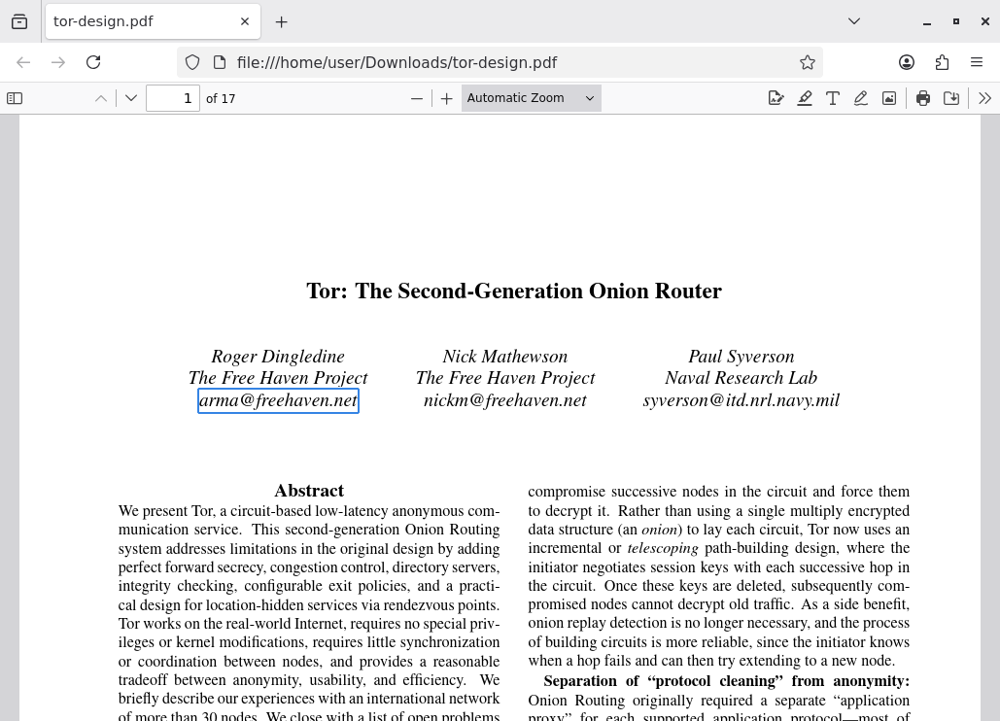
Screenshot Creator and Image Editor
 Kicksecure only!
[1]
Kicksecure only!
[1]
In Qubes, screenshots only work in dom0 (System Tools ->
Screenshot) and this applies to the entire platform,
including Kicksecure for Qubes.
Flameshot homepage (Debian package).
To install it: Start menu -> System Tools ->
QTerminal
Install package(s) flameshot following these
instructions:
1 Platform specific notice.
- Kicksecure: No special notice.
- Kicksecure-Qubes: In Template.
2 Update the package lists and upgrade the system.
sudo apt update && sudo apt full-upgrade
3
Install the flameshot package(s).
Using apt command line --no-install-recommends option is in
most cases optional.
sudo apt install --no-install-recommends flameshot
4 Platform specific notice.
- Kicksecure: No special notice.
- Kicksecure-Qubes: Shut down Template and restart App Qubes based on it as per Qubes Template Modification.
5 Done.
The procedure of installing package(s) flameshot is
complete.
Figure: Flameshot Software in Kicksecure
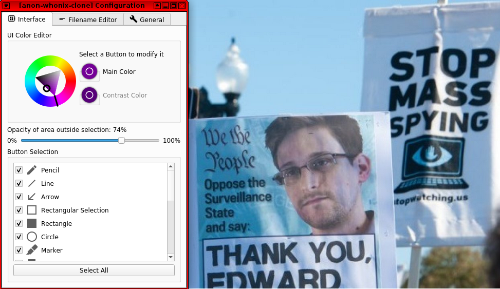
Video Editor
Flowblade homepage (Debian package).
To install it: Start menu -> System Tools ->
QTerminal
Install package(s) flowblade following these
instructions:
1 Platform specific notice.
- Kicksecure: No special notice.
- Kicksecure-Qubes: In Template.
2 Update the package lists and upgrade the system.
sudo apt update && sudo apt full-upgrade
3
Install the flowblade package(s).
Using apt command line --no-install-recommends option is in
most cases optional.
sudo apt install --no-install-recommends flowblade
4 Platform specific notice.
- Kicksecure: No special notice.
- Kicksecure-Qubes: Shut down Template and restart App Qubes based on it as per Qubes Template Modification.
5 Done.
The procedure of installing package(s) flowblade is
complete.
Figure: Flowblade Software in Kicksecure
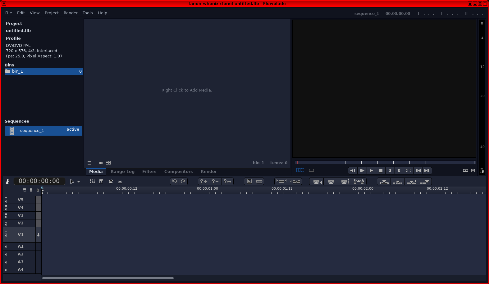
Video Recorder
wf-recorder
homepage (Debian
package).
To install it:
Start menu -> System Tools ->
QTerminal
Install package(s) wf-recorder following these
instructions:
1 Platform specific notice.
- Kicksecure: No special notice.
- Kicksecure-Qubes: In Template.
2 Update the package lists and upgrade the system.
sudo apt update && sudo apt full-upgrade
3
Install the wf-recorder package(s).
Using apt command line --no-install-recommends option is in
most cases optional.
sudo apt install --no-install-recommends wf-recorder
4 Platform specific notice.
- Kicksecure: No special notice.
- Kicksecure-Qubes: Shut down Template and restart App Qubes based on it as per Qubes Template Modification.
5 Done.
The procedure of installing package(s) wf-recorder is
complete.
wf-recorder is a command-line application. To use
it:
1
Open a terminal. Start menu -> System Tools ->
QTerminal
2 Run:
wf-recorder
3 Complete whatever actions you wish to record.
4
Click on the QTerminal window where
wf-recorder is running.
5
Press Ctrl + C to terminate it.
6 Done.
The recording will be saved in a file named
recording.mkv in the current working directory.
Figure: wf-recorder Software in Kicksecure
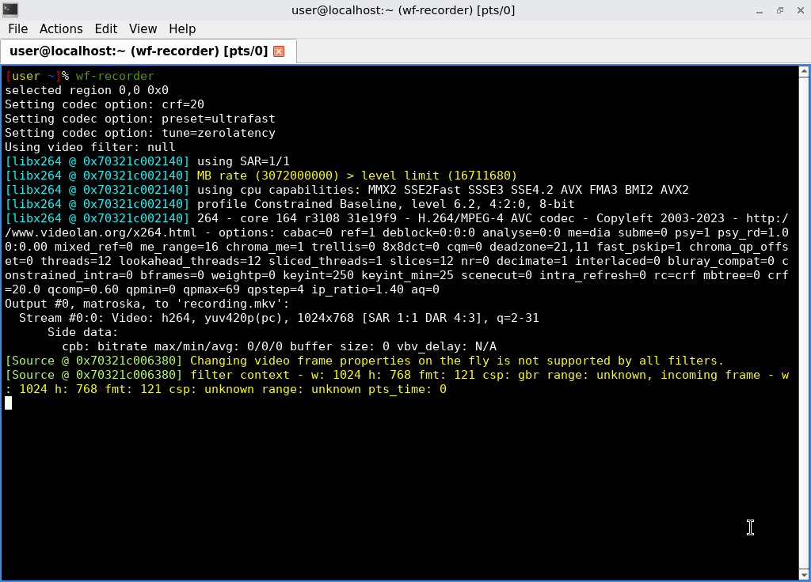
Communications
See E-Mail.
Instant Messengers
 Documentation for this is incomplete. Contributions are happily
considered! See this for
potential alternatives.
Documentation for this is incomplete. Contributions are happily
considered! See this for
potential alternatives.
Maybe contents from [Broken-ExtLink--no-url-was-provided] could be ported here.
Other resources:
- https://www.securemessagingapps.com/
- https://www.privacyguides.org/en/real-time-communication/
- https://privacyspreadsheet.com/messaging-apps
- https://eylenburg.github.io/im_comparison.htm
- [Broken-ExtLink--no-url-was-provided] [2]
IRC Client
XMPP/Jabber Client
 Documentation for this is incomplete. Contributions are happily
considered! See this for
potential alternatives.
Documentation for this is incomplete. Contributions are happily
considered! See this for
potential alternatives.
Maybe contents from [Broken-ExtLink--no-url-was-provided] could be ported here.
Encryption
GnuPG (OpenPGP)
GNU Privacy Guard (GnuPG) can be used to encrypt, decrypt, sign, and verify text. It is an implementation of the OpenPGP standard.
GnuPG comes pre-installed in Kicksecure (Debian packages).
Starting.
gpg
Documentation:
- GnuPG documentation
- OpenPGP key distribution strategies
- parcimonie
- privacy-friendly helper to refresh a GnuPG keyring (in Debian)
- Note: Not available Debian Trixie, therefore not available in Kicksecure 18.[3]
Figure: GnuPG Software in Kicksecure
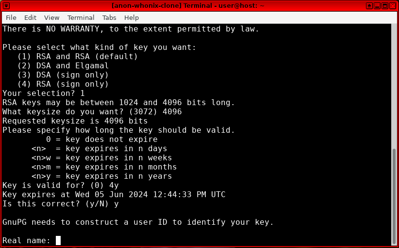
KGpg
KGpg homepage [https://packages.debian.org/{{Stable_project_version_based_on_Debian_codename}/kgpg Debian package for KGpg]
KGpg is a graphical user interface (GUI) frontend for GnuPG. It can be used to create and manage encryption keys, and sign, encrypt, and decrypt files.
1 To install KGpg:
Install package(s) kgpg following these
instructions:
1 Platform specific notice.
- Kicksecure: No special notice.
- Kicksecure-Qubes: In Template.
2 Update the package lists and upgrade the system.
sudo apt update && sudo apt full-upgrade
3
Install the kgpg package(s).
Using apt command line --no-install-recommends option is in
most cases optional.
sudo apt install --no-install-recommends kgpg
4 Platform specific notice.
- Kicksecure: No special notice.
- Kicksecure-Qubes: Shut down Template and restart App Qubes based on it as per Qubes Template Modification.
5 Done.
The procedure of installing package(s) kgpg is
complete.
2 Starting.
kgpg
See footnote for why a GPG frontend is not installed by default on Kicksecure 18.[4]
3 Done.
Figure: KGpg Software in Kicksecure
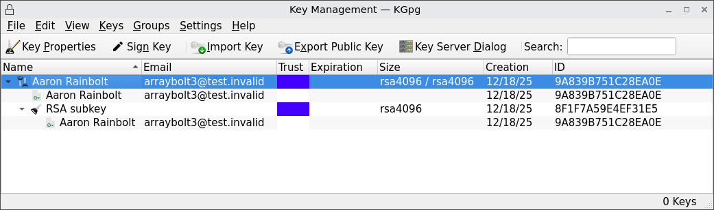
Entertainment
Media Player

The
 VLC Media Player (Debian package) is
pre-installed in Kicksecure. There are no increased fingerprinting risks
because VLC does not
run Javascript. [5]
VLC Media Player (Debian package) is
pre-installed in Kicksecure. There are no increased fingerprinting risks
because VLC does not
run Javascript. [5]
Start menu -> Multimedia ->
VLC Media Player
Figure: VLC Software in Kicksecure
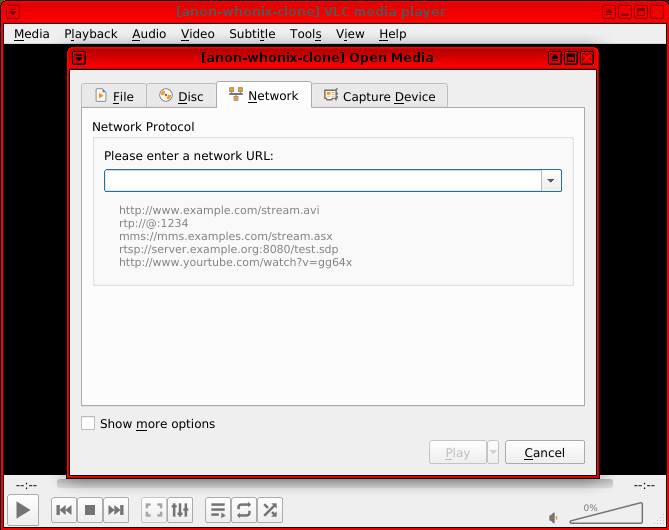
Miscellaneous
Calculator
galculator homepage (Debian package).
To install it: Start menu -> System Tools ->
QTerminal
Install package(s) galculator following these
instructions:
1 Platform specific notice.
- Kicksecure: No special notice.
- Kicksecure-Qubes: In Template.
2 Update the package lists and upgrade the system.
sudo apt update && sudo apt full-upgrade
3
Install the galculator package(s).
Using apt command line --no-install-recommends option is in
most cases optional.
sudo apt install --no-install-recommends galculator
4 Platform specific notice.
- Kicksecure: No special notice.
- Kicksecure-Qubes: Shut down Template and restart App Qubes based on it as per Qubes Template Modification.
5 Done.
The procedure of installing package(s) galculator is
complete.
Figure: galculator Software in Kicksecure
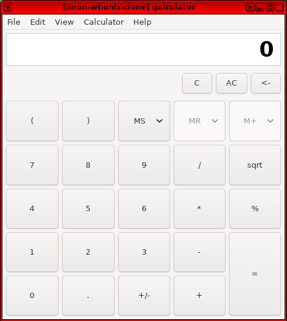
Disk Space Analyzer
df
df -h
baobab
Install package(s) baobab following these
instructions:
1 Platform specific notice.
- Kicksecure: No special notice.
- Kicksecure-Qubes: In Template.
2 Update the package lists and upgrade the system.
sudo apt update && sudo apt full-upgrade
3
Install the baobab package(s).
Using apt command line --no-install-recommends option is in
most cases optional.
sudo apt install --no-install-recommends baobab
4 Platform specific notice.
- Kicksecure: No special notice.
- Kicksecure-Qubes: Shut down Template and restart App Qubes based on it as per Qubes Template Modification.
5 Done.
The procedure of installing package(s) baobab is
complete.
- As user:
- baobab
- With administrative ("root") rights:
- lxsudo baobab
File Comparison Tools
A file comparison tool is also often called a
diff viewer.
meld
Install package(s) meld following these
instructions:
1 Platform specific notice.
- Kicksecure: No special notice.
- Kicksecure-Qubes: In Template.
2 Update the package lists and upgrade the system.
sudo apt update && sudo apt full-upgrade
3
Install the meld package(s).
Using apt command line --no-install-recommends option is in
most cases optional.
sudo apt install --no-install-recommends meld
4 Platform specific notice.
- Kicksecure: No special notice.
- Kicksecure-Qubes: Shut down Template and restart App Qubes based on it as per Qubes Template Modification.
5 Done.
The procedure of installing package(s) meld is
complete.
Usage example:
meld file1 file2
kdiff3
Install package(s) kdiff3 following these
instructions:
1 Platform specific notice.
- Kicksecure: No special notice.
- Kicksecure-Qubes: In Template.
2 Update the package lists and upgrade the system.
sudo apt update && sudo apt full-upgrade
3
Install the kdiff3 package(s).
Using apt command line --no-install-recommends option is in
most cases optional.
sudo apt install --no-install-recommends kdiff3
4 Platform specific notice.
- Kicksecure: No special notice.
- Kicksecure-Qubes: Shut down Template and restart App Qubes based on it as per Qubes Template Modification.
5 Done.
The procedure of installing package(s) kdiff3 is
complete.
Usage example:
kdiff3 file1 file2
diff
diff is a pre-installed command line
interface (CLI) diff viewer.
Usage example:
diff file1 file2
File Manager
PCManFM-Qt is pre-installed. To launch it:
PCManFM-Qt as User
- A
From start menu:
Start menu->Accessories->PCManFM-Qt File Manager - B From command line: pcmanfm-qt
Figure: PCManFM-Qt Software in Kicksecure
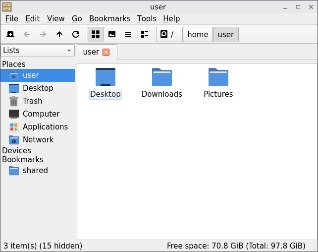
PCManFM-Qt with Administrator Rights
 This procedure will not allow you to directly edit or view the contents
of files that are inaccessible to the current user account. It only
allows file management operations (move, copy, create folder, etc.) in
areas of the system your user usually would not have access to.
This procedure will not allow you to directly edit or view the contents
of files that are inaccessible to the current user account. It only
allows file management operations (move, copy, create folder, etc.) in
areas of the system your user usually would not have access to.
As a workaround, you may copy a file to a location your user account does have access to, change the copy's permissions to allow you to edit it, then copy it back into place once you are finished making edits.
1
Ensure gvfs-backends is installed.
Install package(s) gvfs-backends following these
instructions:
1 Platform specific notice.
- Kicksecure: No special notice.
- Kicksecure-Qubes: In Template.
2 Update the package lists and upgrade the system.
sudo apt update && sudo apt full-upgrade
3
Install the gvfs-backends package(s).
Using apt command line --no-install-recommends option is in
most cases optional.
sudo apt install --no-install-recommends gvfs-backends
4 Platform specific notice.
- Kicksecure: No special notice.
- Kicksecure-Qubes: Shut down Template and restart App Qubes based on it as per Qubes Template Modification.
5 Done.
The procedure of installing package(s) gvfs-backends is
complete.
2 Launch PCManFM-Qt normally as described in #PCManFM-Qt as User.
3
Click Tools -> Open Tab in Admin Mode.
4 Provide your password if prompted.
5 Done.
PCManFM-Qt can now be used to perform file management tasks on files owned by root.
Task Manager
There many choices. Task managers are unspecific to Kicksecure. These should be researched as per Self Support First Policy.
taskmanager command line utilities
Popular taskmanager command line utilities include:
htoptoppspstreepgrep
All of these utilities are preinstalled in Kicksecure.
htop is generally the most user-friendly option.
task killing command line utilities
Task killing can also be done on the command line.
killkillall
These utilities are preinstalled in Kicksecure.
qps
qps is the default task manager for the LXQt desktop. qps used to be pre-installed in Kicksecure, but is no longer included because of a bug that surfaces when hyper-threading is disabled on some hardware.[6]
1 Installation.
Install package(s) qps following these instructions:
1 Platform specific notice.
- Kicksecure: No special notice.
- Kicksecure-Qubes: In Template.
2 Update the package lists and upgrade the system.
sudo apt update && sudo apt full-upgrade
3
Install the qps package(s).
Using apt command line --no-install-recommends option is in
most cases optional.
sudo apt install --no-install-recommends qps
4 Platform specific notice.
- Kicksecure: No special notice.
- Kicksecure-Qubes: Shut down Template and restart App Qubes based on it as per Qubes Template Modification.
5 Done.
The procedure of installing package(s) qps is
complete.
2 Run.
qps
plasma-systemmonitor
1 Installation.
Install package(s) plasma-systemmonitor following these
instructions:
1 Platform specific notice.
- Kicksecure: No special notice.
- Kicksecure-Qubes: In Template.
2 Update the package lists and upgrade the system.
sudo apt update && sudo apt full-upgrade
3
Install the plasma-systemmonitor package(s).
Using apt command line --no-install-recommends option is in
most cases optional.
sudo apt install --no-install-recommends plasma-systemmonitor
4 Platform specific notice.
- Kicksecure: No special notice.
- Kicksecure-Qubes: Shut down Template and restart App Qubes based on it as per Qubes Template Modification.
5 Done.
The procedure of installing package(s)
plasma-systemmonitor is complete.
2 Run.
plasma-systemmonitor
iotop - simple top-like I/O monitor
iotop does for I/O usage what top(1) does for CPU usage. It watches I/O usage information output by the Linux kernel and displays a table of current I/O usage by processes on the system. It is handy for answering the question "Why is the disk churning so much?".Debian iotop package
Install package(s) iotop following these
instructions:
1 Platform specific notice.
- Kicksecure: No special notice.
- Kicksecure-Qubes: In Template.
2 Update the package lists and upgrade the system.
sudo apt update && sudo apt full-upgrade
3
Install the iotop package(s).
Using apt command line --no-install-recommends option is in
most cases optional.
sudo apt install --no-install-recommends iotop
4 Platform specific notice.
- Kicksecure: No special notice.
- Kicksecure-Qubes: Shut down Template and restart App Qubes based on it as per Qubes Template Modification.
5 Done.
The procedure of installing package(s) iotop is
complete.
Run.
sudo iotop -a
Terminal

QTerminal homepage (Debian package). QTerminal is pre-installed in Kicksecure.
To start it: Start menu -> System Tools ->
QTerminal
Figure: QTerminal in Kicksecure
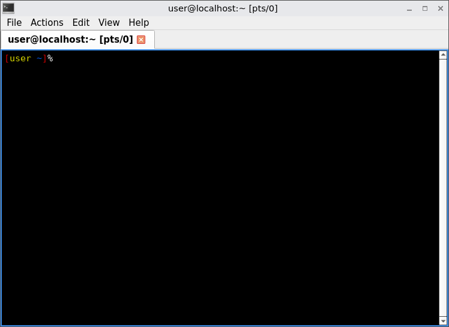
Unsafe Paste Warning Popup
Note: Not enabled in QTerminal by default yet. Was enabled in Xfce-Terminal by default. Will be enabled in QTerminal soon.
This is a demonstration of the Paste multiline text
warning feature of the QTerminal Emulator. Other graphical terminal
emulators might have similar features.
Figure: Paste multiline text
warning feature
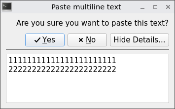
First a text editor is opened, then several arbitrary lines of text written, copied to clipboard and pasted into the terminal emulator.
1 Open a text editor.
Open file some-file-name in a text editor of your
choice as a regular, non-root user.
If you are using a graphical environment, run. featherpad some-file-name
If you are using a terminal, run. nano some-file-name
2 Write several lines of text.
Should be long lines. Should be multiple lines. The text is not important. Can be anything.
For example:
111111111111111111111111 222222222222222222222222
3 Copy to clipboard.
Select all of the lines of text and right click, copy to clipboard.
4 Open a terminal.
Open a terminal.
Platform specific. Select your platform.

Kicksecure USER Session
If you are using a graphical Kicksecure with LXQt, complete the following steps.
Start menu -> System Tools ->
QTerminal

Kicksecure SYSMAINT Session
In the System Maintenance Panel, under the Misc section,
click Open Terminal.

Kicksecure-Qubes
If you are using Kicksecure-Qubes, complete the following steps.
Qubes App Launcher (blue/grey "Q") ->
Kicksecure App Qube (commonly named kicksecure)
-> QTerminal
5 Paste the text into the terminal.
6 The warning popup will appear.
Paste multiline text warning:
7 Done.
The demonstration of the Paste multiline text warning
feature has been completed.
If the user does not understand the contents of the pasted text, the user should abort. Otherwise, the user might be compromised by running commands not understood by the user.
Related security risk: Invisible Malicious Unicode
Text Editor
Open File as Regular User
featherpad is installed by default.
Replace /path/to/file with the actual file name.
featherpad /path/to/file
Open File with Root Rights
Editing files which can only be edited with administrative ("root") rights can be
done using the following instructions.
Prefer sudoedit for better security.
[7]
1 Sysmaint Notice

- A
If using
user-sysmaint-split: The user must boot into the sysmaint session. For details and instructions on how to do so, see user-sysmaint-split. - B If using unrestricted admin mode: This sysmaint notice does not apply. Continue with the steps below.
2 Notes.
When using sudoedit:
- Missing file: If the file does not exist, it will be created.
- Existing file: If the file does exist, it will be edited.
- Editor requirement: Featherpad (or the chosen text editor)
must be closed before running the
sudoeditcommand.
3
Open /path/to/file with root rights.
Note: Replace /path/to/file with the actual file
name.
sudoedit /path/to/file
To use a different editor, replace featherpad with the
name of the editor you wish to use.
SUDO_EDITOR=featherpad sudoedit /path/to/file
4 Edit the file.
5 Save.
Notes:
- Save action: Simply close the editor and press save.
- Avoid "save as": Do not use "save as" - this is unnecessary and will not work.
5 Done.
Work on Sensitive Documents
Office Suite
LibreOffice homepage (Debian package) [8] is recommended. It is a fully-featured office productivity suite that provides a near drop-in replacement for Microsoft (R) Office. A word processor is included, along with spreadsheet and presentation applications.
1 To install it:
Start menu -> System Tools ->
QTerminal
Install package(s) libreoffice following these
instructions:
1 Platform specific notice.
- Kicksecure: No special notice.
- Kicksecure-Qubes: In Template.
2 Update the package lists and upgrade the system.
sudo apt update && sudo apt full-upgrade
3
Install the libreoffice package(s).
Using apt command line --no-install-recommends option is in
most cases optional.
sudo apt install --no-install-recommends libreoffice
4 Platform specific notice.
- Kicksecure: No special notice.
- Kicksecure-Qubes: Shut down Template and restart App Qubes based on it as per Qubes Template Modification.
5 Done.
The procedure of installing package(s) libreoffice is
complete.
2 To launch these applications:
Start menu -> Office
Figure: LibreOffice Software in Kicksecure
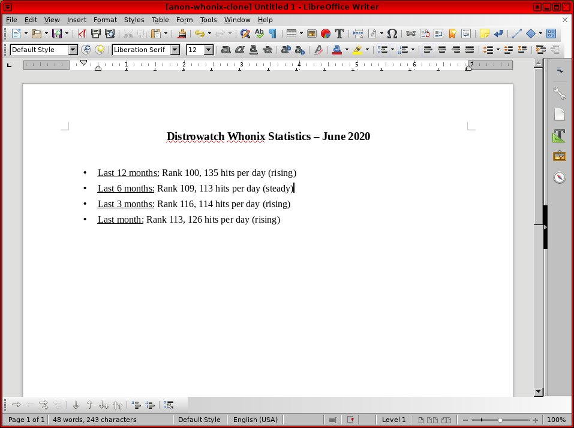
Printing and Scanning
Publishing
Scribus homepage (Debian package) is
an open source desktop page layout application accessible from the
desktop menu (Applications -> Graphics). It can
be used for many tasks; from booklets design to newspapers, magazines,
newsletters and posters to technical documentation.
Scribus has sophisticated page layout features like precision placing and rotating of text and/or images on a page, manual kerning of type, bezier curves polygons, precision placement of objects, layering with RGB and CMYK custom colors. The Scribus document file format is XML-based. Unlike proprietary binary file formats, even damaged documents can be recovered with a simple text editor.
To install it: Start menu -> System Tools ->
QTerminal
Install package(s) scribus following these
instructions:
1 Platform specific notice.
- Kicksecure: No special notice.
- Kicksecure-Qubes: In Template.
2 Update the package lists and upgrade the system.
sudo apt update && sudo apt full-upgrade
3
Install the scribus package(s).
Using apt command line --no-install-recommends option is in
most cases optional.
sudo apt install --no-install-recommends scribus
4 Platform specific notice.
- Kicksecure: No special notice.
- Kicksecure-Qubes: Shut down Template and restart App Qubes based on it as per Qubes Template Modification.
5 Done.
The procedure of installing package(s) scribus is
complete.
Figure: Scribus Software in Kicksecure
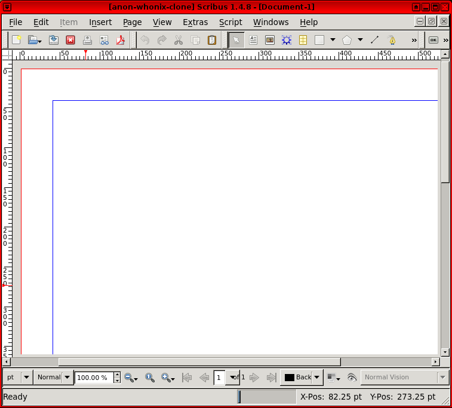
scurl-download: SSL Command Line Downloader
To securely download files or webpages from the Internet on the command line, scurl is pre-installed in Kicksecure. scurl-download should be preferred over wget, since the former enforces strong encryption and is less buggy. See also Secure Downloads.
To invoke scurl-download to download a file, use the following syntax and replace the example URL with the file's location.
scurl-download https://dist.torproject.org/torbrowser/15.0.3/tor-browser-linux-x86_64-15.0.3.tar.xz
This will download
tor-browser-linux-x86_64-15.0.3.tar.xz to the current
working directory.
Refer to the scurl entry for further examples and a complete description of this tool.
Figure: scurl-download Command in Kicksecure
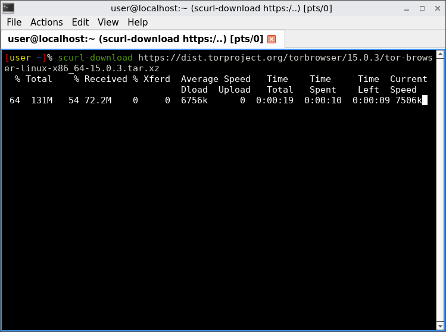
Java
Install package(s) default-jre following these
instructions:
1 Platform specific notice.
- Kicksecure: No special notice.
- Kicksecure-Qubes: In Template.
2 Update the package lists and upgrade the system.
sudo apt update && sudo apt full-upgrade
3
Install the default-jre package(s).
Using apt command line --no-install-recommends option is in
most cases optional.
sudo apt install --no-install-recommends default-jre
4 Platform specific notice.
- Kicksecure: No special notice.
- Kicksecure-Qubes: Shut down Template and restart App Qubes based on it as per Qubes Template Modification.
5 Done.
The procedure of installing package(s) default-jre is
complete.
Additional Software
If the recommendations in this section are unsatisfactory, additional applications can be easily installed in a few steps; see Install Software.
Footnotes
- Kicksecure means all Kicksecure platforms except Kicksecure inside Qubes. This includes Kicksecure on hardware, Kicksecure in virtual machines (VM) such as VirtualBox, and Kicksecure KVM.
- Original and web archived behind paywall: * https://www.heise.de/select/ct/2025/9/2505715264990543311 * https://web.archive.org/web/20250418145817/https://www.heise.de/select/ct/2025/9/2505715264990543311
- https://tracker.debian.org/news/1607399/parcimonie-removed-from-testing/, https://bugs.debian.org/cgi-bin/bugreport.cgi?bug=1091033
- Previously, GNU Privacy Assistant (GPA) was installed in Kicksecure
by default. However, GPA was removed
from Debian Trixie before release, and is therefore not available in
Kicksecure 18.
KGpg depends on a very large number of KDE libraries, which take up over 120 MB of disk space when installed. For this reason, KGpg is not installed by default. - However, unrestricted access to the large number of codecs, along with the gstreamer and ffmpeg frameworks can expose the system to remote attacks. The risk is greater than with Tor Browser because the latter attempts to restrict codecs to a particular subset. No cookies are stored by VLC and no information is collected and sent to third parties; see the Original Whonix forum thread.
- See https://github.com/lxqt/qps/issues/528.
- https://forums.whonix.org/t/use-sudoedit-in-whonix-documentation-and-whonix-software/7599
- See also: LibreOffice in Wikipedia.
License
Kicksecure Software wiki page Copyright (C) Amnesia
Kicksecure Software wiki page Copyright (C) 2012 - 2026 ENCRYPTED SUPPORT LLC <adrelanos(at)kicksecure.com(Replace(at)with@.)Please DO NOT use e-mail for one of the following reasons:Private Contact: Please avoid e-mail whenever possible. (Private Communications Policy)User Support Questions: No. (See Support.)Leaks Submissions: No. (No Leaks Policy)Sponsored posts: No.Paid links: No.SEO reviews: No.Advertisement deals: No.Default application installation: No. (Default Application Policy)>This program comes with ABSOLUTELY NO WARRANTY; for details see the wiki source code.
This is free software, and you are welcome to redistribute it under certain conditions; see the wiki source code for details.